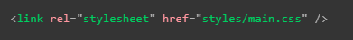
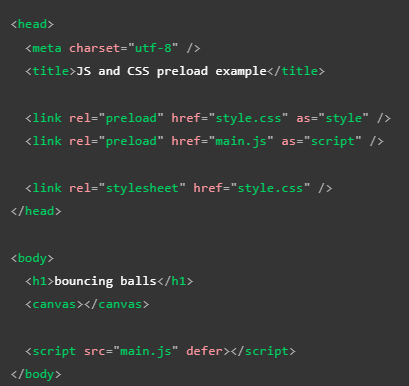

Segun cuales sean las caracteriticas y requerimientos de una paguina a la hora de ser cargada por el navegador, se puede dar el caso de que se requiera que ciertos scrips o elementos esten disponibles al momento de que los elementos seaa cargados, todo esto para el correcto funcionamento de la paguina, sin embago la forma en la que se cargan los diversos archivos que conforman una paguia web se encuentra ya establecida ya de antemano.
Existe una forma de asignar un elemeto o dato para que sea tratado con prioridad por el navegador a la hora de cargar la paguina, para que de ese modo este recurso este disponible al momento de que sea requerido, estipo de configuración se logra empleandolo en los metadatos de la paguina, más precisamente con el elemento "link" el cual posee el atributo "rel" el cual a su vez cuenta con el valor "preload".
En otras palabras al aplicarse el valor "preload" en el atributo "rel" del alemento "link" se puede definir que algun elemento se cargue con antelación ya que este sera requerido rapidamente al cargarse la paguina, un aspecto a tener a cuenta de esta implementación es que pese a que el nombre de este valor contiene el termino 'precargar' realmente este no carga ni ejecuta ningun script, simplemente asigna que estos elementos seleccionados sean descargados y almacenados en cache con prioridad.
Por lo tanto el alemento "link" no solo se utiliza para cargar los estilos CSS de la paguina
Si no que tambien tiene la función de designar algun elemento para que se precargue al iniciarse la carga de la paguina com se puede apreciar en el siguiete ejemplo:
Este ejemplo a parte de simple puede parecer trivial sin embargo los veneficios de implmentar el preload se hacen notar a la hora de que los demás elementos HTML sean caegados, por ejemplo es util selecionar a los siguietes elementos para que sean precargados con antelación:
Al emplear el "preload" es importante tener presente:
Es posible mejorar el rendimiento del "preload" con el atributo "as", el cual se utiliza en conjunto con este y permite definir de que tipo de archivo se trata la precarga, al hacer esto se optienen las siguientes ventajas:
Debido a que es posble precargar muchos tipos de archivos el atributo "as" posee muchos valores, algunos de estos son:
| Valor del atributo | Tipo de archivo | Descripción |
|---|---|---|
| audio | audio | Define un archivo de audio, se incorpora igual que lo aria en un elemento "audio" |
| document | document | Define un documento HTML que sera incrustado en un "frame" o un "iframe" |
| embed | Algún recurso | Cualquier recurso que será incrustado en un "embed" |
| fetch | Recurso Fetch o XHR | Recurso al que se accedera mendiante una solicitud fetch o XHR, como un archivo ArrayBuffer, WebAssembly/WASM binario o JSON |
| font | Fuente | Define un archivo de fuente CSS |
| image | archivo de imagen | Define la precarga de un archivo de imagen, normanlmente se usa para imagenes particularmente grandes |
| object | Algun Recurso | Un recurso para ser incrustrado en un elemento "object" |
| script | ARchivo JS | Define la precarga de un archivo JavaScrip |
| style | Estilos CSS | Define la precarga de una hoja de estilos CSS |
| track | archivo WebVTT | Define la carga de un archivo WebVTT |
| worker | worker web o JS | Define la precarga de un worker de JavaScrip o un worker compartido |
| video | archivo de video | Define la precarga de un archivo de video como los que se usan comunmente en los elementos "video" |